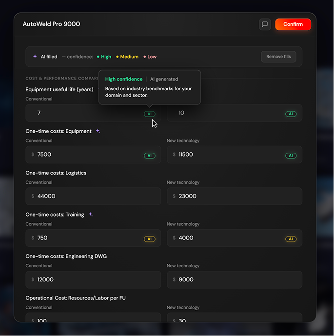
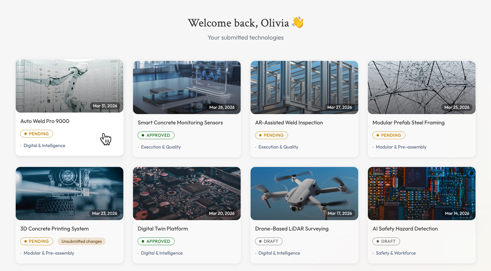

AI-Assisted Submissions
Helping non-technical users complete complex forms without friction
Context
The Open Technology Platform enables large enterprises to evaluate and onboard new technologies from external vendors. Submitters — often non-technical users — were required to complete detailed forms comparing their technology against conventional alternatives across cost, performance, and logistics. Many fields were optional but critical for evaluation quality, and users frequently left them blank or abandoned submissions entirely.
The Problem
During early testing, users frequently skipped optional fields or contacted support asking what values to enter. These fields were critical for evaluation quality but required technical knowledge most submitters didn't have.
The Solution
We designed a smart submission flow where users only need to complete the required fields. Once submitted, AI analyses their responses and any uploaded supporting documents to generate contextually relevant suggestions for all remaining optional fields — removing the burden of technical knowledge from the user.
The AI Feature in Detail
Step 1 — User fills required fields
Users complete core required information: company details, contact information, and key technology identifiers. These inputs — alongside any uploaded supporting documents — form the context the AI needs to generate meaningful, specific suggestions rather than generic ones.

Step 2 — AI analyses and generates
Once required fields are complete, the system shows a clear loading state: "We're analysing your inputs to pre-fill the remaining fields." The AI icon on each field label signals which fields are about to be suggested, setting expectations before results appear.
Step 3 — AI-filled fields with confidence indicators
All AI-generated fields are colour-coded to indicate how confident the AI is in each suggestion — high, medium, or low. Users can hover over any field to see what the colour means and what it was based on. Every suggestion can be edited or removed before submitting.

Step 4 — Recovery state if suggestions are removed
If a user removes the AI-generated fills, a prompt allows them to restore suggestions instantly or fill manually.
Result
Vendors can now complete a full submission without needing deep technical knowledge. The platform receives richer, more complete data for evaluation, and submitters have a clear, trustworthy experience where AI assists rather than overrides.
